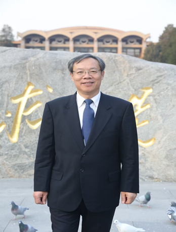
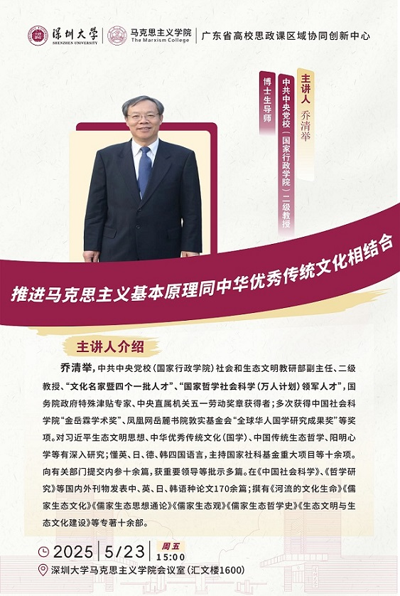

<td align="center" class="tbcolor10" colspan="2" valign="top">
<table border="0" cellpadding="0" height="100%" width="100%">
<tbody><tr><td align="right" height="35px" style="font-size:9pt">
<a href="javascript:window.close()" title="关闭本窗口">关闭窗口</a>｜<a href="print.asp?id=548394" target="_blank" title="打印本页内容">打印张贴版</a>    

</td></tr>
<tr>
<td align="center" height="500" valign="top">
<table border="0" cellpadding="4" cellspacing="0" height="100%" style="border-collapse: collapse;word-break:break-all;" width="86%">
<tbody><tr>
<td align="center" height="80px"><span style="font-family:方正小标宋简体;font-size: 25px;color: #C70E5C">【学术讲座十三】推进马克思主义基本原理同中华优秀传统文化相结合</span></td>
</tr>
<tr>
<td align="center" height="50px" style="font-size: 9pt"><font color="#808080">马克思主义学院　2025/5/16 10:49:00</font><br/> 
<font color="#F8F8F8" style="font-size:9pt">（钟沛基 2022280095）</font></td>
</tr>
<tr>
<td height="300" valign="top">
<p class="MsoNormal" style="line-height:30.0pt;mso-line-height-rule:exactly"><b style="mso-bidi-font-weight:normal"><span style="font-size:16.0pt;font-family:
仿宋">主题：</span></b><span style="font-family: 仿宋; font-size: 18pt;">推进马克思主义基本原理同中华优秀传统文化相结合</span></p>
<p class="MsoNormal" style="line-height:30.0pt;mso-line-height-rule:exactly"><b style="mso-bidi-font-weight:normal"><span style="font-size:16.0pt;font-family:
仿宋">时间：</span></b><span lang="EN-US" style="font-size:16.0pt;font-family:仿宋">2025</span><span style="font-size:16.0pt;font-family:仿宋">年<span lang="EN-US">5</span>月<span lang="EN-US">23</span>日（星期五）下午<span lang="EN-US">3: 00<o:p></o:p></span></span></p>
<p class="MsoNormal" style="line-height:30.0pt;mso-line-height-rule:exactly"><b style="mso-bidi-font-weight:normal"><span style="font-size:16.0pt;font-family:
仿宋">地点：</span></b><span style="font-size:16.0pt;font-family:仿宋">汇文楼<span lang="EN-US">1600</span>会议室<span lang="EN-US"><o:p></o:p></span></span></p>
<p class="MsoNormal" style="line-height:30.0pt;mso-line-height-rule:exactly"><b style="mso-bidi-font-weight:normal"><span style="font-size:16.0pt;font-family:
仿宋">主讲人：</span></b><span style="font-size:16.0pt;font-family:仿宋">乔清举 中共中央党校（国家行政学院）二级教授、博士生导师<span lang="EN-US"><o:p></o:p></span></span></p><div style="text-align: center;"></div><div style="text-align: left;"><p class="MsoNormal" style="line-height:30.0pt;mso-line-height-rule:exactly"><b><span style="font-size:16.0pt;font-family:仿宋">主讲人简介：<span lang="EN-US"><o:p></o:p></span></span></b></p>
<span style='font-size:16.0pt;font-family:仿宋;mso-bidi-font-family:"Times New Roman";
mso-font-kerning:1.0pt;mso-ansi-language:EN-US;mso-fareast-language:ZH-CN;
mso-bidi-language:AR-SA;mso-bidi-font-weight:bold'>    乔清举，中共中央党校（国家行政学院）社会和生态文明教研部副主任、二级教授、“文化名家暨四个一批人才”、“国家哲学社会科学（万人计划）领军人才”，国务院政府特殊津贴专家、中央直属机关五一劳动奖章获得者；多次获得中国社会科学院“金岳霖学术奖”、凤凰网岳麓书院敦实基金会“全球华人国学研究成果奖”等奖项。对习近平生态文明思想、中华优秀传统文化（国学）、中国传统生态哲学、阳明心学等有深入研究；懂英、日、德、韩四国语言，主持国家社科基金重大项目等十余项。向有关部门提交内参十余篇，获重要领导等批示多篇。在《中国社会科学》、《哲学研究》等国内外刊物发表中、英、日、韩语种论文<span lang="EN-US">170</span>余篇；撰有《河流的文化生命》《儒家生态文化》《儒家生态思想通论》《儒家生态观》《儒家生态哲学史》《生态文明与生态文化建设》等专著十余部。</span></div><div style="text-align: center;"></div><div style="text-align: left;"><p align="left" class="MsoNormal" style="text-align:left;text-indent:208.0pt;
mso-char-indent-count:13.0;line-height:30.0pt;mso-line-height-rule:exactly"><span style="font-size:16.0pt;font-family:仿宋">                      深圳大学马克思主义学院 <span lang="EN-US" style="mso-bidi-font-weight:bold"><o:p></o:p></span></span></p><p align="left" class="MsoNormal" style="text-align:left;text-indent:208.0pt;
mso-char-indent-count:13.0;line-height:30.0pt;mso-line-height-rule:exactly"><span style='font-size:16.0pt;font-family:仿宋;
mso-bidi-font-family:"Times New Roman";mso-font-kerning:1.0pt;mso-ansi-language:
EN-US;mso-fareast-language:ZH-CN;mso-bidi-language:AR-SA;mso-bidi-font-weight:
bold'>                 广东省高校思政课区域协同创新中心</span></p>
<p align="left" class="MsoNormal" style="text-align:left;line-height:30.0pt;
mso-line-height-rule:exactly"><span lang="EN-US" style="font-size:16.0pt;
font-family:仿宋"><span style="mso-spacerun:yes">　　　　　　　　　　　　 
</span><span style="mso-spacerun:yes">　</span><span style="mso-spacerun:yes"> </span><span style="mso-spacerun:yes">                                                                                           </span>2025</span><span style="font-size:16.0pt;font-family:仿宋">年<span lang="EN-US">5</span>月<span lang="EN-US">16</span>日<span lang="EN-US"><o:p></o:p></span></span></p><span style='font-size:16.0pt;font-family:仿宋;mso-bidi-font-family:"Times New Roman";
mso-font-kerning:1.0pt;mso-ansi-language:EN-US;mso-fareast-language:ZH-CN;
mso-bidi-language:AR-SA;mso-bidi-font-weight:bold'></span></div><link href="/szu.css" rel="stylesheet" type="text/css"/><link href="/szu.css" rel="stylesheet" type="text/css"/><link href="/szu.css" rel="stylesheet" type="text/css"/><link href="/szu.css" rel="stylesheet" type="text/css"/><link href="/szu.css" rel="stylesheet" type="text/css"/><link href="/szu.css" rel="stylesheet" type="text/css"/><link href="/szu.css" rel="stylesheet" type="text/css"/></td>
</tr>
<tr><td height="0" style="font-size: 9pt"></td></tr>
<tr><td align="right" style="font-size: 9pt">撰稿：马克思主义学院　审核：马克思主义学院  <br/>（更新于2025/5/21 16:08:00）<br/> </td></tr>
</tbody></table>
</td>
</tr>
</tbody></table>
</td>
